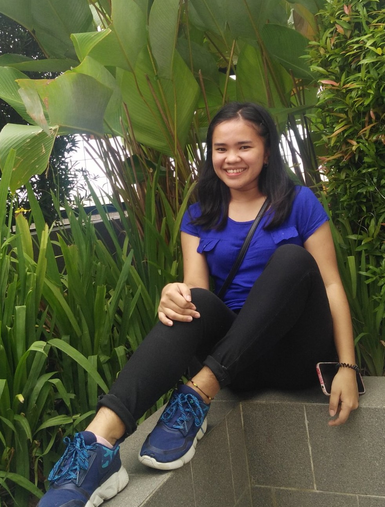

About
Myself
Hi, I'm Quint Christine Mae T. Pahoyo. I came from the island born of fire, Camiguin Island. An Information Technology student at the University of Science and Technology of Southern Philippines-Cagayan de Oro Campus. I finished high school at Camiguin National High School. Being the eldest sibling in the family, pressure is on me everytime being responsible is the topic. Having faith in the Lord is one of my inspiration to continue life, because God will provide.